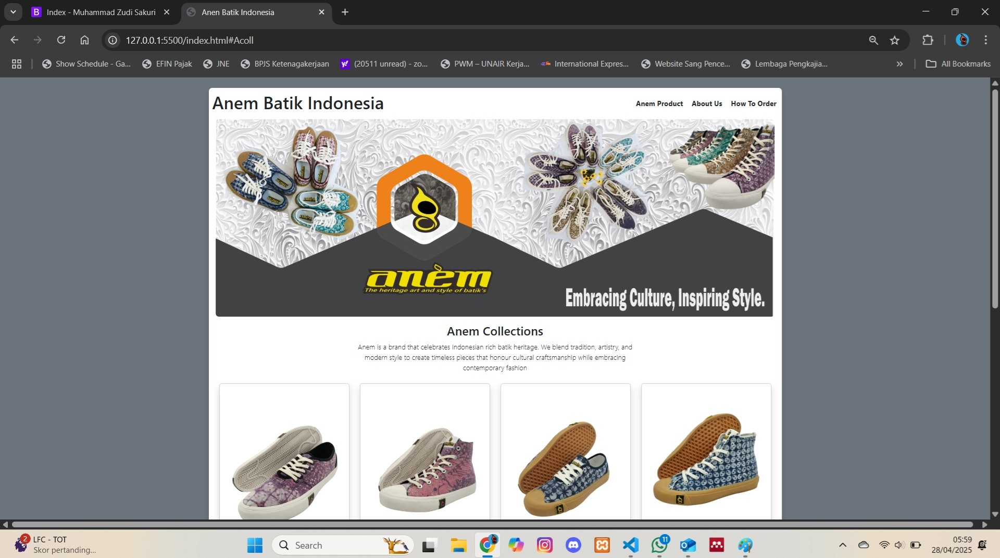
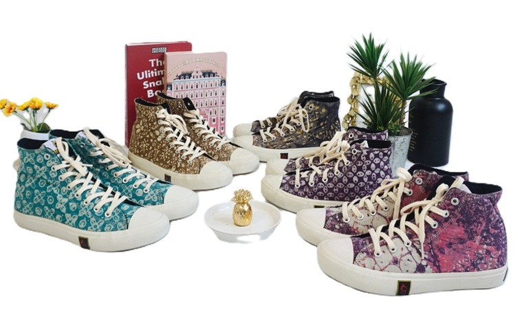
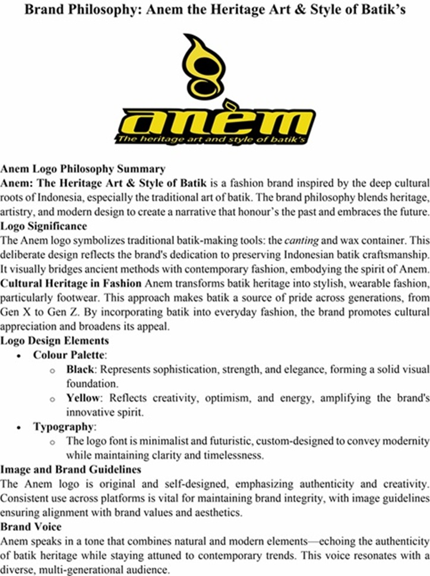

Portfolio
Welcome to my portfolio—a curated selection of projects that reflect my dual expertise in Footwear Design & Manufacturing and Software Engineering. From crafting innovative footwear products that merge form, function, and sustainability, to building digital solutions that are efficient, intuitive, and scalable, my work spans across physical and digital realms. Each project demonstrates my passion for solving problems through design thinking, technical precision, and collaboration. Whether you're here to explore creative concepts or clean code, I hope these works inspire and inform.
- All
- Footwear
- Web Developer
- Technical Marketing





Product Design 2
Patterned Canvas Footwear Collection: This collection explores textile-based design through patterned canvas sneakers. Each model integrates locally inspired motifs with modern sneaker forms, aiming to blend cultural expression and contemporary style. Emphasis was placed on pattern placement, color coordination, and variation in shoe cuts (low-cut and mid-cut). The result is a cohesive yet diverse line that reflects creative material use and identity-driven design.

Web Interface Prototype
This is a basic e-commerce web prototype for Anem Batik Indonesia, a brand that highlights Indonesia’s rich batik heritage. Built using HTML and Bootstrap, the interface features a clean product catalog layout, navigation menu, and visual banner to support user-friendly browsing and cultural storytelling.

{kind=link}
{kind=link}
{kind=link}
{kind=link}
{kind=link}